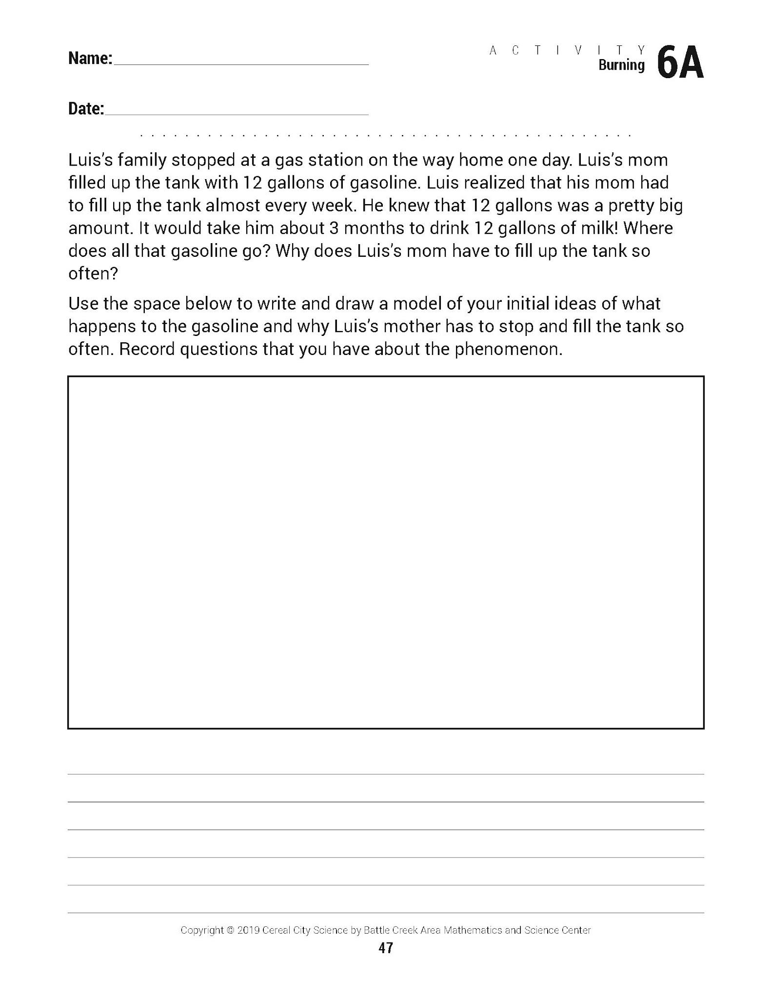
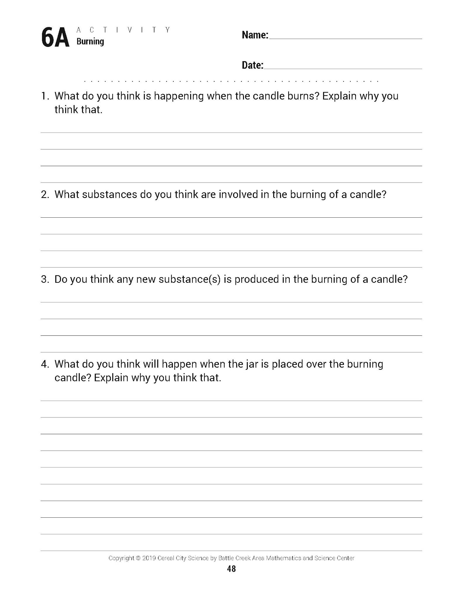
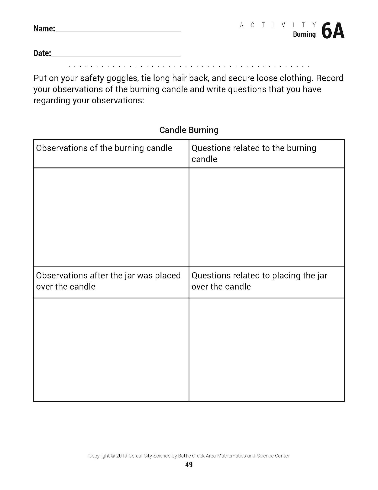
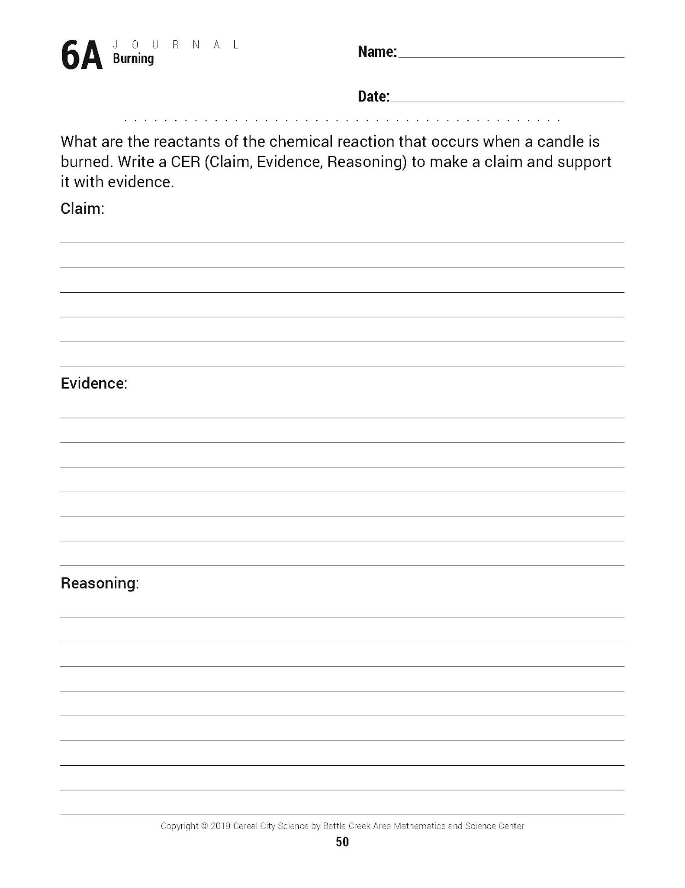

Activity 6A • BurningJournal page 47 of 84
Name: ______________________________Date: _______________
Luis’s family stopped at a gas station on the way home one day. Luis’s mom filled up the tank with 12 gallons of gasoline. Luis realized that his mom had to fill up the tank almost every week. He knew that 12 gallons was a pretty big amount. It would take him about 3 months to drink 12 gallons of milk! Where does all that gasoline go? Why does Luis’s mom have to fill up the tank so often? Use the space below to write and draw a model of your initial ideas of what happens to the gasoline and why Luis’s mother has to stop and fill the tank so often. Record questions that you have about the phenomenon.
Compare with original journal page 47
This is the unmarked scanned page for checking original diagrams, exact wording, or layout. The editable HTML content is above.

Activity 6A • BurningJournal page 48 of 84
Name: ______________________________Date: _______________
1. What do you think is happening when the candle burns? Explain why you think that.
2. What substances do you think are involved in the burning of a candle?
3. Do you think any new substance(s) is produced in the burning of a candle?
4. What do you think will happen when the jar is placed over the burning candle? Explain why you think that.
Compare with original journal page 48
This is the unmarked scanned page for checking original diagrams, exact wording, or layout. The editable HTML content is above.

Activity 6A • BurningJournal page 49 of 84
Name: ______________________________Date: _______________
Put on your safety goggles, tie long hair back, and secure loose clothing. Record your observations of the burning candle and write questions that you have regarding your observations:
Candle Burning| Observations of the burning candle | Questions related to the burning candle |
|---|
| |
| Observations after the jar was placed over the candle | Questions related to placing the jar over the candle |
|---|
| |
Compare with original journal page 49
This is the unmarked scanned page for checking original diagrams, exact wording, or layout. The editable HTML content is above.

Activity 6A • BurningJournal page 50 of 84
Name: ______________________________Date: _______________
What are the reactants of the chemical reaction that occurs when a candle is burned. Write a CER (Claim, Evidence, Reasoning) to make a claim and support it with evidence.
Claim:
Evidence:
Reasoning:
Compare with original journal page 50
This is the unmarked scanned page for checking original diagrams, exact wording, or layout. The editable HTML content is above.
